女性在生理期之前容易有经前期综合征，表现为爱发脾气、头痛、肚子痛，有的人还会感觉肚子胀胀的。
在生理期到来之前，预先连喝两三天玫瑰红糖茶，可以帮助您比较顺畅地度过生理期。坚持每个月饮用，还有养颜和淡斑的作用。
玫瑰红糖茶
【原料】
干玫瑰花蕾12朵、红糖适量。
【做法】
把玫瑰花蕾、红糖一起放入杯中，用沸水冲泡，闷5分钟当茶饮，可以冲泡三遍。
【功效】
- 调理经前期综合征，预防经期不适。
- 理气、化瘀、止痛。
- 养颜、淡斑。
- 红糖是生湿热的，配上玫瑰花就不容易上火，因为玫瑰花有一个清补的作用，可以清肝热。
- 男性气血不通的人，也可以喝这个茶方。
- 坚持喝玫瑰红糖茶，唇色不灰了。
——徐翔云
- 玫瑰红糖茶是我用的时间最长的茶方。2017年买了老师的所有书籍，开始喝玫瑰红糖茶，生完孩子后月经提前的问题从提前七八天到现在提前一两天，痛经减少，眼角的斑变淡（同时在用老师的柿叶祛斑方）。
——兰兰
- 玫瑰红糖茶是众多茶方中我用着效果最显著的，仅仅在经前饮用几次而已，痛经就非常明显地改善好多！
——慧爱
- 跟大家分享一下，去年开始喝玫瑰红糖茶，月经提前的问题大大改善。以前是提前一周甚至十天，现在提前三四天；而且痛经也好多了，以前都是疼得直不起腰。感谢陈老师。
——27群读者
- 喝了快一周的玫瑰红糖水，这次来月经前没感觉腰酸腿软。太神奇了！
——28群读者
- 书中的茶方都很好，我用得最多的是玫瑰红糖茶和三花陈皮茶，每次来月经前坚持喝玫瑰红糖茶，月经前头痛的症状没有了，乳房也没那么胀痛了，脾气也不暴躁了。
——秋水伊人
- 喝玫瑰花茶心情会好，不会纠结很多事，心情不再烦躁，熬夜护肝，月经前舒肝畅经。
——苏苏
- 我用玫瑰红糖泡水喝了一段时间，改善了每次月经前胸部胀痛的问题。
——罗路华
- 喝玫瑰红糖茶十多天了，有效地解决了月经不调现象，同时经期的痛经也缓解了，脸上的斑点比原来淡化了许多。
——畅然
- 在月经前喝玫瑰红糖茶特别舒服，缓解了经期前的急躁，月经期间也舒畅了许多。
——健美
- 老师的玫瑰花红糖茶我一直坚持喝，玫瑰有舒肝理气、活血的功效，例假来得准时又顺畅！
——女英
- 玫瑰红糖茶，每次月经来前喝一周，对经前期综合征效果明显，改善了经期的不适感。
——高高
- 大姨妈以前都不准时，不是提前就是延后。看了陈老师的书，每次经前开始喝玫瑰红糖茶，每个月都坚持喝，结果每月都来得特别准时，也没有往常的痛经了。跟着陈老师养生真的太幸福了。
——提昂哈
- 之前每次月经前都头疼、肚子胀痛，这次有幸拜读了陈老师的玫瑰花茶的文章，喝了一周左右，这次月经居然没有再头疼，肚子也没那么胀痛了！感恩陈老师带给我们的养生知识！
——dore
- 要来例假前，人总是容易烦躁、发脾气，喝了玫瑰茶，心情就会好很多。
——梳子
- 今年立春开始，就跟着老师的提醒常泡玫瑰茶来喝，煮乌梅汤的时候也会加玫瑰花进去。平常我大姨妈来之前几天都会心情郁闷，容易发脾气，而且还乳房胀痛。而喝了玫瑰花茶的那个月，大姨妈静悄悄就来了，没有预报了。平常是玫瑰花加蜂蜜，经期就加红糖。第二个月就放松了，没泡玫瑰茶喝，差不多时候就开始觉得乳房胀痛，我就再泡玫瑰茶来喝，胀痛就缓解了。这玫瑰花的舒肝解郁功效真不是盖的。以后还是不能放松，经常喝一喝还是好的。有了这法宝，就不会有经期前的不良反应了。
——49群读者
- 由于职业原因，我经常会生闷气，有点肝郁。左侧附件还长了2厘米的囊肿。在公众号看到陈老师分享说玫瑰解肝郁，还能去瘀血。群里也有不少人分享喝玫瑰茶的好处，除去月经量大时不喝，其余时间坚持喝玫瑰红糖茶。有时觉得甜得太腻，就换成玫瑰陈皮的组合。坚持了五个多月，检查发现囊肿消失了。感谢陈老师分享！
——38期云凉
有的女性在经期前会产生水分代谢问题，身体轻微水肿，可以喝这道消肿饮。
葡萄消肿饮
【原料】
葡萄干150克、生姜皮50克。
【做法】
- 把生姜放入加面粉的清水中泡10分钟，将表皮清洗干净。用厨房用纸吸干表面的水分。
- 削下姜皮，放通风处晾两至三天至自然干燥。
- 全部原料分成10份，分别装入10个茶包袋。
- 每次取1袋，沸水冲泡，闷10分钟后饮用，可以反复冲泡。
【功效】
- 健脾、利水、通小便。
- 缓解身体轻微水肿，适合女性经期前饮用。
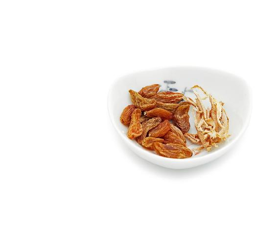
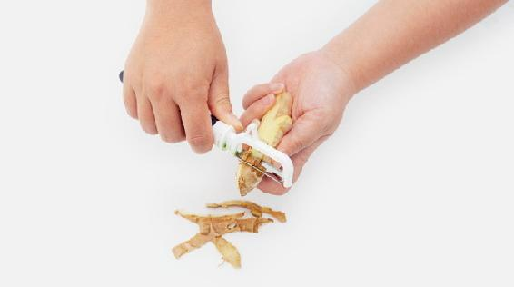
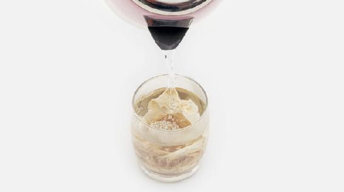
读者评论
- 葡萄消肿饮，这款茶喝了真的可以消肿。
——红
- 生姜皮很难收集，晒了会变得很小。
——淘淘鱼
有的女性在月经还没到来之前，就感觉腹部胀痛。这种情况可以在生理期之前，喝一周红果怀香茶，到月经开始时停止饮用。
小茴香是大补肾阳的，适合肾阳虚的人常吃。它能温暖人体的下焦，又能理气。凡是身体的下半部分有寒湿、气滞、疼痛的情况，比如痛经、腰痛、肠痉挛、遗尿等等，都可以用它调理。
红果怀香茶
【原料】
小茴香180克、干山楂600克、红糖150克。
【做法】
- 把小茴香放入无油的炒锅，用小火炒黄。
- 把红糖用少量水溶解，把干山楂放入泡透，然后一起下锅，用小火不断翻炒，到红糖不黏手的时候起锅。
- 把小茴香、红糖、山楂分成20份，装入 20个茶包袋。
- 每次取1包，用沸水冲泡，闷20分钟后饮用，可以反复冲泡。
【功效】
- 调理女性月经前腹部胀痛。
- 暖胃助消化，适合胃胀痛、消化不良的人饮用。
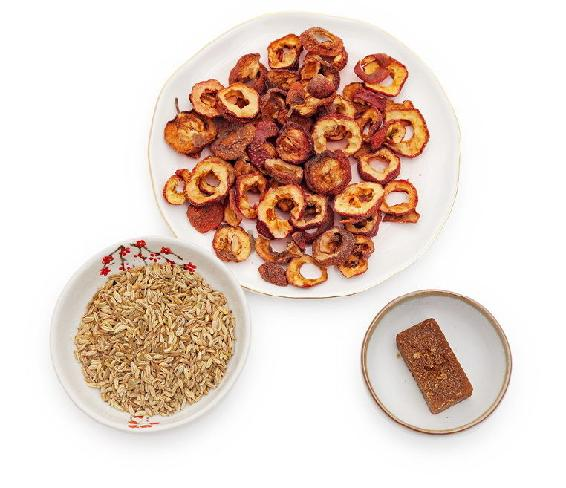
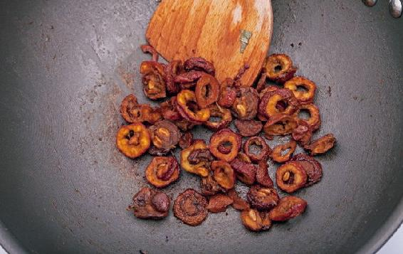
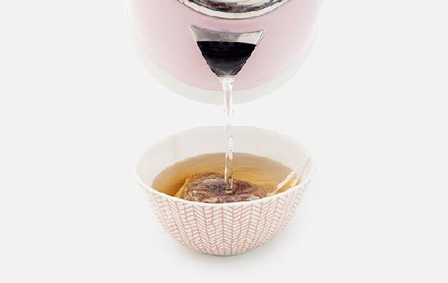
- 这次来月经明显比以前有精神。以前非常疲惫，这次好很多的原因是在来之前两三天喝了红果怀香茶。比起来了之后再调理，提前几天准备有用许多。
——默默
- 自己一直痛经，因为老师讲的山楂红糖茶很简单实用，每次来例假前喝一个星期，真的不痛了。
——怡
- 过年油腻吃多了，胃很不舒服，喝了红果怀香茶，胃就舒服了！
——海燕
- 秋冬季节，因碰凉水频繁，小腹会坠痛。来杯红果怀香茶，暖暖的，半小时不到的工夫，不痛了。每次出现这种情况，用此方法都能立刻见效。
——Mahdⅰs小公主
- 效果很好，我是气滞血瘀体质，身体寒湿，每次来例假都很疼。提前一周喝，这么多年来第一次不疼。这是我学习允斌老师的书用的第一个食方。后来一直喝，但是有个情况是下午喝了会小腹胀、轻微牙龈肿。
——淘淘鱼
- 暖身效果明显。
——荷叶
- 会在冬天给奶奶泡着喝！活血化瘀，祛寒止痛，消食开胃！特别好。
——冉冉妈妈
- 脾胃不好，就从书上找来这个方子，很方便。每次觉得胃不舒服，就会泡水来喝，基本半杯就能缓解症状。
——樱子
- 这方子特别好用，我是三个孩子的妈，35岁，经常腰痛，痛时弯腰都不行。别人都笑我年纪轻轻就腰疼，我就去药店买了这几样，喝了第二天就不痛了。我连续喝了五天后，很久都没有腰痛过。分享给朋友，都说有很好的疗效。
——金田123~姚遥
月经迟到：山楂红糖茶
这是一道调理月经迟来，同时伴有脾气急躁现象的女性的茶方。
山楂红糖茶
【原料】
干山楂300克、红糖300克。
【做法】
- 把原料分成10份，放入10个茶包袋中。
- 每次取1袋放入随身杯，用沸水冲泡，闷20分钟后饮用，可以反复冲泡。
【功效】
- 化瘀血、生新血，调理长期头晕耳鸣又感觉心烦的现象。
- 淡化偏暗的面色和唇色。
- 山楂破气破血的作用很强，不宜单独饮用，加上补气的甘草、红糖或大枣就平和了。
- 适宜平时饮用，月经期间不饮。
读者评论
- 我嘴唇乌黑，怀疑自己有瘀血，就喝了这款山楂红糖茶，果然唇色变红一点了。更让我觉得神奇的是，每次喝完午睡特别容易入睡，平时是很难睡着的。
——小露珠
- 喝了三天山楂红糖水！今天例假来了。
——柏云
- 昨天煮了一次山楂红糖茶，今天例假就来了，很不错！尤其对月经推迟的人。感恩陈老师。
——畅
- 我本来12号要来例假，昨天都14号了还没来，有些着急，就用了红糖和山楂泡水喝，今早就来了。
——27群读者
有的女性经期不规律，时而提前，时而推迟，这种情况与肝气有关系，平时可以常喝这个小茶方来调理。
经量过多的女性在经期不要饮用这个茶。
玫瑰月季茶
【原料】
干玫瑰花60朵、干月季花60朵、红糖200克。
【做法】
- 全部原料分成10份，分别装入10个茶包袋。
- 每次取1袋，沸水冲泡，闷5分钟后饮用，可以冲泡3遍。
【功效】
- 理气解郁、活血化瘀。
- 预防黄褐斑。
- 调理腹胀痛经，适合月经周期不规律的女性。
月季和玫瑰的区别：
月季和玫瑰是姊妹花，很容易被人们混淆。鲜花店出售的漂亮“玫瑰”，其实是月季花；花园和公园里栽种的各种颜色的“玫瑰”花，大部分也是月季。真正的食用玫瑰是不做观赏用的，而且一般只有粉红色。
月季和玫瑰的不同之处：
1.花期不同。玫瑰只在每年的春末夏初开放，而月季则长年开花，在北方可以一直开到下雪之前。
2.原产地不同。玫瑰是舶来品，而月季是中国自古以来就有的，在西方，它的名称直译过来就是“中国玫瑰”。
3.功效不同。玫瑰花与月季的作用相似，但月季长于活血，玫瑰长于理气。
玫瑰既能调肝又能养脾，比月季更适合于日常保健。
月季专入肝经，比较适合治病，它是调理女性月经的妇科良药。
购买干品时如何鉴别？
月季花蕾大，颜色比较红。
玫瑰花蕾小，颜色偏粉或发紫。
玫瑰只开一季，比较金贵，所以价格较高。
- 让闺女在经期前三天喝玫瑰月季花茶，治痛经特别好。闺女这些年一直在喝，不再买止痛药吃了！介绍这个方子给周边朋友，都说特有效果！
——张倩
- 我喝了两个多月了，月经的颜色比以前红了，月经前后时间相差不那么多了。
——凌云
很多人不知道，核桃有活血化瘀的作用。记得小时候妈妈特别强调过：核桃是“追余血的”，也就是说核桃可以帮助排出人体内残留的瘀血。特别是对于女性血瘀痛经和产后恶露不尽，核桃是特效。
女性痛经严重，甚至痛得蜷身躺在床上起不了身，可以试试我家的这个小秘方。
这个方子公开后多年来收到了大量的经验反馈，效果很好，许多人喝下去疼痛可以当场缓解。
核桃红糖茶
【原料】
核桃仁1 000克、红糖2 000克。
【做法】
- 先把核桃仁放入无油的炒锅用小火炒香，再用刀切碎，或用料理机打碎，晾凉后与红糖一起拌匀，分成20份，分别装入20个茶包袋，装瓶密封，放阴凉处或放入冰箱冷藏。
- 每次取1袋，用沸水冲泡，闷30分钟后饮用。
【功效】
- 缓解血瘀引起的痛经。
- 活血、养血，调理产妇恶露不净。
- 预防成年女性内分泌失调引起的周期性面部长痘及斑点。
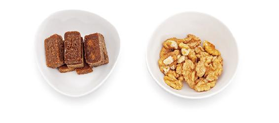
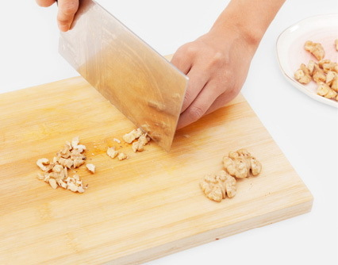
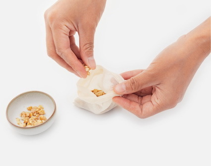
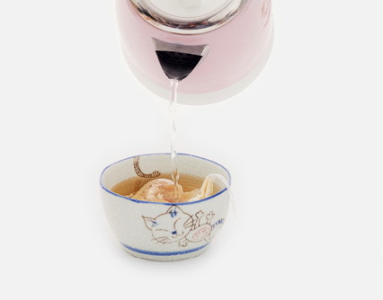
核桃仁的外皮一定要留下才有效。痛经的女性，可以在月经来潮前两天开始喝，一直喝到月经第三天。
读者评论
- 我每次都是刚有痛经感觉时就赶紧喝“核桃红糖茶”，很暖和，肚子很舒服也不疼了。以前疼得躺在床上不能动，死去活来的。
——马六艺
- 我从中考就开始痛经，折磨我很多年了，每到经期必须休息一两天！自从喝了陈老师的方子，血的颜色鲜红了，痛经也减轻到几乎没有感觉，而且连腰痛以及胸痛的毛病都好了很多！真是感恩老师！遗憾没有早点认识老师！
——袁螺
- 经期肚子疼，一碗核桃红糖茶喝下去，立竿见影，疼痛感减轻了不少！
——meiyan
- 我有时候痛经会肚子疼、头疼，严重时会呕吐，所以我妈会给我熬这个核桃红糖水来喝，效果很不错。
——22群读者
- 核桃红糖茶治痛经特管用。现在我身边的人都在用陈老师的茶包小偏方，都把我叫成老中医了。老师的很多方子说得都特别详细，功效也特别好！现在老的小的都在用！
——转
- 感谢陈老师这个方子。痛经疼得我只能趴着，肚子胀得受不了。喝了核桃红糖水，两天就明显减轻，第三天基本不疼了。谢谢陈老师！
——芳草清清
- 核桃红糖汤，治痛经真棒，喝了马上就有效。接连两次月经都喝了这款茶，这次来时一点儿痛感都没有。继续巩固一下。它也可以作为月经期的辅助调理，帮助排出身体的瘀血哦。
——peaceful
- 核桃仁煮红糖，活血化瘀效果确实好。我十几年来月经都是淋漓不尽，这次在经期连续喝了三天的核桃仁红糖水，五天结束，干干净净。供大家参考。
——叙
- 遇上经期不舒服，用核桃和红糖一起煮水喝，热乎乎地喝下去，大约两小时后，就有大块的瘀血排出来，然后就很舒服了。我来月经虽然不是很痛，但是有一点轻微不舒服，真没想到这个茶方效果这么好。之前拖拖拉拉，大约一个星期，这次居然就四天，干干净净。真是太神奇了。
——12群读者
- 昨天中午月经刚来腹痛，月经颜色黑，我就照着老师的方法煮了一大碗核桃红糖汤，趁热喝下。晚上还有点疼，今天一点都不疼了。
——peace
- 我今天大姨妈第二天，走了一天的路赶各个场子开会。昨天痛经，昨天晚上喝了核桃红糖水，今天走那么多路，一天下来精神还很好。强力推荐核桃红糖水啊！
——芬
- 我平时没有明显痛经症状，喝核桃红糖茶是为了排经血顺畅，谁知刚才看到一大块瘀血直接排了出来，非常惊讶，因为平时一切冷的凉的都不吃，也很少吹冷气，不承想还是有这么一大块的瘀血，这个是意外收获。所以姐妹们，体内瘀血我们没有办法知道存不存在，痛不痛经还是建议喝核桃红糖水，这是借助核桃红糖水更好排瘀。如果像我这样排出大块瘀血就再好不过了。
——小兵
- 这次来例假，头三天喝了核桃红糖水，身体非常舒服。后几天没有再喝，今天腰疼得厉害，就又煮了核桃红糖水喝，下午就没事了。还有我喝了核桃红糖水后，睡眠超级好。
——磊子
- 老师说月经来之前喝活血化瘀，真的，我月经快来时腰酸背痛。我昨晚煲了喝，今天醒了真不再腰酸背痛的。
——紫缘物语
- 昨天用了核桃红糖茶，感觉心脏有力了。没想到核桃、红糖这么普通，功效这么大！
——27群读者
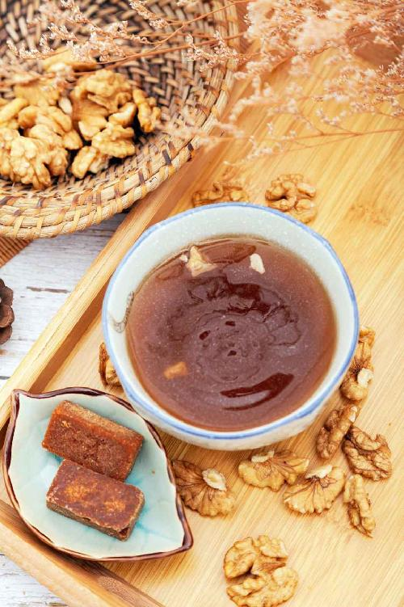
当归被称为“妇科人参”。女性经期，可以作为保养品来吃，长期坚持效果很好。
归枣红糖茶
【原料】
红枣60个、当归片100克、红糖30〜60小块。
【做法】
- 当归切成薄片，和红枣一起分成10份，分别装入10个茶包袋。
- 每次取1袋，加入3小块红糖，沸水冲泡，闷10分钟后饮用，可以反复冲泡。每次冲泡时可以再次加入红糖。
【功效】
- 预防眼睛疲劳。
- 健脾养肝，益气补血。
- 使面色红润。
- 月经量过多的女性少饮。
- 经期适合多吃红糖。如果不是经期饮用，红糖可以减量。
- 例假来时，归枣红糖饮可以消除痛经不适。因为不痛情绪也会稳定些，整个人也不烦躁了，安稳度过经期，真的很给力。
——Mahdⅰs小公主
- 以前经期量少，头痛，肚子痛。这个月喝了当归红糖水，排出很多血块，量也多了，感觉很舒服，而且头和肚子都不痛了……能够遇见陈老师，是我的福气！
——空谷幽兰
- 昨天中午，人特别不舒服，脉弱细沉，气不足，全身瘫软无力，这种症状一年要出现好几次。顺时以来快一年了，这种症状逐渐减少。我按照茶包书里的量煮了一杯很浓的归枣红糖茶喝下去，到下午3点多的时候，那些不适感都没有了，爬楼的时候都不感觉累喘，效果非常棒！谢谢陈老师，给了我们这么多简单易操作又有效的方子！
——柒月
这是一道调理女性下焦寒湿——白带清长、长期痛经、肠胃虚寒、慢性腹泻等症状的茶饮。受凉腹痛的时候，特别是女性经期沾凉水以后腹痛，也可以喝这款茶来缓解。
汉宫椒枣茶
【原料】
花椒70粒、小黄姜30克、红枣60个、红糖20小块（约300克）。
【做法】
- 将全部原料一起分成10份，分别装入10个茶包袋。
- 每次取1袋，用沸水冲泡，闷10分钟后饮用，可以反复冲泡。
【功效】
- 女性宫寒痛经。
- 祛除下焦寒湿。
- 预防成年人寒湿重引起的下颌长痘（肝火旺的人，痘痘长在面部其他部位的，可以喝三花陈皮茶来预防，见本书对症调养篇164页）。
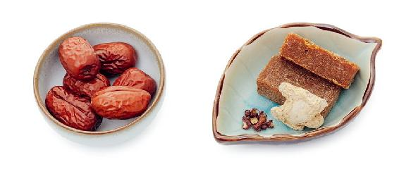
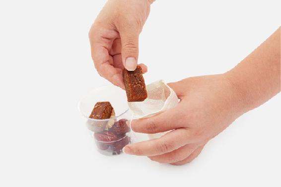
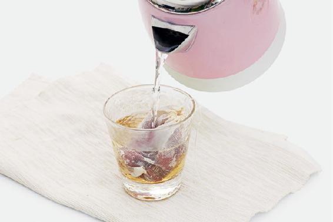
泡茶的花椒，一定要选好的，切勿用掺假染色的花椒。买的时候可以放一粒到嘴里尝尝，一粒入嘴就能使口腔和舌头全部麻木，而且能品到鲜味的，才是好花椒。
读者评论
- 汉宫花椒茶对于下腹受寒胀痛和痛经很管用。
——雪天
- 冬天喝汉宫椒枣茶，暖洋洋的。
——荟荟
- 我只喝了一次，是在姜枣茶里加上花椒煮的茶，就没有原来那种胃里和腹部凉，还胀气，要用手热敷才舒服的感觉了，真神奇！
——辽阔
- 今年的姜枣茶里都会加几颗花椒，味道微辣，喝了全身暖暖的，也不上火，应是对症了下焦寒湿！
——读者朋友
- 喝完后很舒服，对于下半身湿寒的人特别好。
——珉珉
- 喝汉宫椒枣茶对宫寒有效果，不觉得小肚子冷了。
——羊mama
- 每年夏天喝，下巴不长痘了。
——读者朋友
- 袪湿祛痘效果好。
——读者朋友
- 以前夏天小腿会酸痛，晚上睡觉盖好被子不敢露。跟着陈老师学顺时生活，再喝这款茶，晚上暖和也敢露脚了，这方真好！
——杨素
- 我是从去年开始关注与实践允斌老师的各种养生食方，今年从立夏开始喝姜枣茶，每天煮姜枣茶都会放几粒汉宫花椒进去，喝了之后不会像以前整天困乏无力啦，脾胃也比以前好多了，脸上也不像以前那样苍白了。
——小华_Yang
- 整个夏天都在喝，感觉湿气少了一些，大便不会那么稀，那么黏马桶了。
——向日葵（年年有余）
- 立夏后的姜枣茶都会加花椒，今年连续喝了半个月后，就开始有白色排泄物，也不知道是不是跟喝这个有关系。不过持续排泄了一周多，之后例假期不像之前那样难受了。
——樱子
- 我的月经是每次提前一个星期左右，而且小腹胀痛。开始喝姜枣茶加花椒后，症状缓解了好多，白带也少了，喝完以后肚子暖暖的，人很精神。感谢老师的好方法！
——红
- 喝了两周了，感觉白带少了。
——青山常在
- 前天突然发现有白带，我平时除了排卵期，是干干净净，没有白带的，而且小腹有下坠感，腰酸，同时小腿冷痛，足跟冰冷。自我排除了排卵，觉得是下焦受寒了，查看茶包一书，觉得汉宫椒枣茶适合我的症状，喝了两碗下去，小腹下坠感消失，腰直了。我感到喝对了茶方。昨天再喝一碗，上述不适症状消除得七七八八。今早再喝一碗，完全好了。神奇的汉宫椒枣茶！
——涂涂
- 立夏的时候喝了姜枣茶，两天小腹胀痛。后来加了7粒花椒，这些症状就没有了。
——读者朋友
- 来月经前，小腹坠得难受，也不是痛。用了老师的这款茶饮，喝了两杯，就不难受了，感受到老师小茶方的神奇。
——雪天
- 立夏开始喝姜枣茶加花椒加罗汉果，瘦了，腰两侧的赘肉没有了，有腰身了。
——隐形
- 由于办公室长年累月地开空调，导致体寒怕冷，经常性头痛，湿气重，精神很不好。今年早早就开始喝姜枣茶+花椒，现在感觉湿气没那么重了，人也精神了。
——空谷幽兰
- 今年喝姜枣茶上火，牙疼，口腔溃疡，停了五天。再饮姜枣茶加了半个罗汉果，20克牛蒡，7颗汉源贡椒，到现在没上火。
——Mahdⅰs小公主
- 姜枣茶加了花椒，更加除湿气。以前觉得身体很沉重，现在好多了。
——葡萄
- 喝这个茶最明显的是指甲上的月牙变化，无名指上变大了，小指上的出来了。
——暖阳熏熏
- 四川朋友给我带了正宗的青花椒和红花椒，用来吃和泡脚，真的很祛寒湿！熬夜后连黑眼圈都不明显了！
——H安（汤）
冬瓜子入肾，专门帮助肾脏排出浊水。人体的浊水，是体内炎症和感染引起的。这种水是混浊的，带有颜色，比如说黄痰、小便黄、女性白带发黄，严重的就是脓，比如化脓性肺炎是肺部有脓，阑尾炎是肠道有脓，饮食上都可以用冬瓜子来辅助调理。
保存冬瓜子也不麻烦。吃冬瓜的时候，把瓤掏出来晾干，再把冬瓜子取出来保存就行。
冬瓜子茶
【原料】
冬瓜子100克。
【做法】
- 吃冬瓜时把冬瓜瓤掏出来，取出冬瓜子放在阳台上晒干。
- 把晒干的冬瓜子下锅，加清水，煮开后2分钟捞出来，沥干水分。
- 放入无油的炒锅，用小火炒黄。
- 放进料理机打成粉末。分成10份，分别装入10个茶包袋。
- 每次取1袋，用沸水冲泡，闷20分钟后饮用。有条件煮水最好。
【功效】
- 调理湿热引起的小便发黄、白带发黄。
- 消除湿热造成的面部黄气。
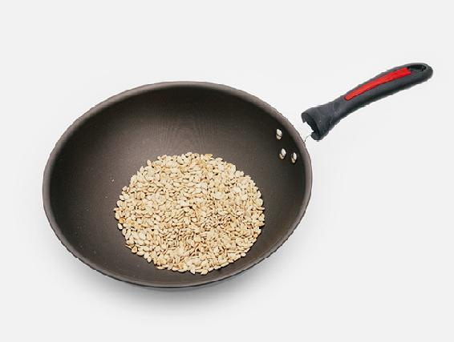
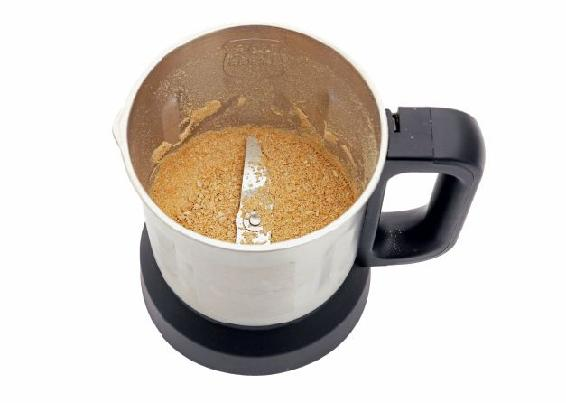
- 冬瓜子最好不要直接吃，比较凉，吃了容易拉肚子。
- 冬瓜子炒黄了再煮水喝，这样不会太过寒凉。体内湿热很重，需要排脓的情况下，才直接用没炒过的冬瓜子。
读者评论
- 喝这个炒冬瓜子冰糖茶，好像有时候会排一些黄色白带。
——虚舟
- 以前我妈脑梗塞经常脚肿，我用冬瓜子煮水给她喝，第二天脚就不肿了！
——玉兔
- 炒冬瓜子茶，湿热重的几天（白带偏黄，外阴瘙痒）喝，特别有效，当天就有效果。
——高鑫
- 我最近由于湿热导致手和腿都起了好多红疹，用过的东西有凉拌马齿苋，喝马齿苋水，吃苦瓜、丝瓜和丝瓜皮、冬瓜、红苋菜＋皮蛋、空心菜，喝莲子心茶。其间痒的时候就泡苦蒿水，用马齿苋榨汁灌肠一次，有作用，但是麻烦。后来用冬瓜子煮水喝，效果明显。现在不是很严格地忌口了，也没有加重，在渐渐好转。谢谢老师的茶方，经济好用！
——澜羽
- 利水祛湿，姐姐喝了说管用。
——人生最美是清欢
- 除湿、利小便的确神效。
——幸福
- 曾经有段时间感觉白带发黄，下焦有湿热。正好那几天买了冬瓜煲汤，直接把新鲜的冬瓜子和内瓤掏了出来，煮水加冰糖，喝了一天，第二天白带颜色就正常了。
——一丹
- 这个也喝过了，小便黄，喝了几次就好了，效果很好。
——春晓
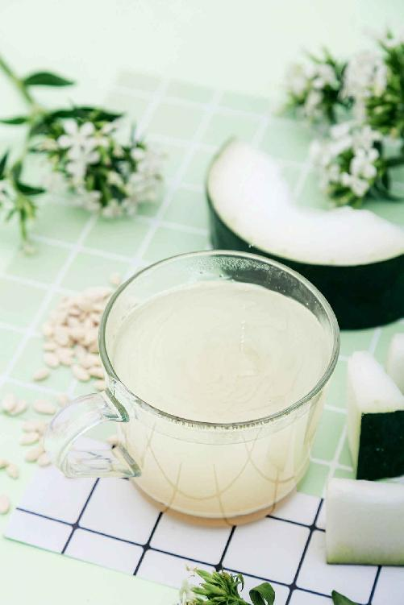
女性养颜小茶方
阳光是把双刃剑，能够补我们的阳气，但阳光的光毒又会加速皮肤的老化，甚至诱发癌变。
西红柿和胡萝卜，都是抗光毒的好东西，可以延缓光毒造成的皮肤老化。夏天可以多吃一些。你还可以把它们榨成汁，出门之前喝一杯，回家再喝一杯。
胡萝卜番茄汁
【原料】
西红柿、胡萝卜各适量。
【做法】
西红柿和胡萝卜切块，一起放在榨汁机里，榨成汁。
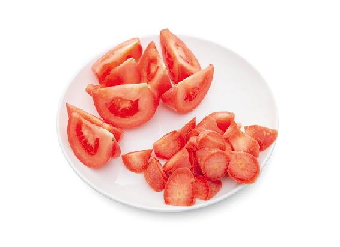
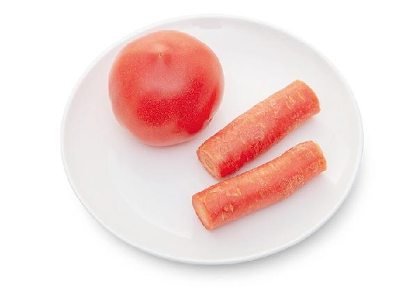
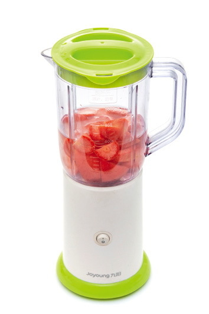
- 选熟透的西红柿，抗光毒的效果更好。
- 西红柿还能使皮肤保持白皙。吃了西红柿再出门，相当于擦了一层防晒霜。
- 夏天在外面跑一天，回来榨一杯，喝了明显感觉脸没那么火辣辣的，今年这个果汁还是会经常喝的。
——Mary
- 到了夏天最喜欢榨胡萝卜西红柿汁喝，味道好还能抗光毒；加点蜂蜜，孩子也很喜欢喝！
——海燕
- 夏天光照强烈，即使穿防晒衣，戴遮阳帽，出门前都会来杯胡萝卜西红柿汁防光毒，到家后会继续饮一杯。皮肤整个夏天也会很光滑。
——Mahdⅰs小公主
- 近些年，我入夏时经常发生皮肤过敏问题，皮肤一晒就会发红、起疹子、瘙痒，非常痛苦。我从2017年开始，每到夏天，都会榨这款胡萝卜西红柿汁喝，防止皮肤过敏和晒伤的效果非常好。自从喝了这款饮品之后，夏天可以穿短袖衣服出去，再没有发生晒伤过敏的情况。
——杨杨
- 昨天去游乐园玩，太阳挺足，还游泳了，因为出门前喝了一杯胡萝卜西红柿汁，回家后又喝了一杯，感觉皮肤没有难受，也没有晒得黑黑红红的样子。
——渡过
- 胡萝卜西红柿汁喝了一个星期，今年喝了和去年没有喝相比，皮肤明显白净，出门不擦防晒霜，也没有感觉皮肤晒黑。陈老师的食方真的很好！紧跟着陈老师天天顺时养生，不负光阴！
——木子梨
- 夏天保健用的，非常好！外出前来一杯，感觉皮肤很滋润，也很解暑。
——夏小乙
- 很喜欢用，材料方便，出门前喝一杯，防晒黑，味道也不错。
——水连
- 我对紫外线过敏，自从得知老师这个食方后，夏天经常做些喝，感觉很好，出门再用遮阳伞，没有出现过皮肤过敏！太棒了！
——百合
- 胡萝卜西红柿汁防晒效果非常好！
——玉兔
- 这个太好了，比涂防晒霜强多了，非常好。大热天，早上出门前，喝一杯出去，一天都不用防晒霜。
——春晓
柠檬是使人美丽的水果。它分解人体脂肪的能力很强，又能淡化皮肤的色素。如果想要保持苗条的身材和白皙无瑕的皮肤，柠檬就是你的好朋友。
柠檬红糖茶
【原料】
干柠檬片或新鲜柠檬片、红糖适量。
【做法】
- 每次取大约半个柠檬的量，配适量红糖。
- 用沸水冲泡后当茶喝，可以反复冲泡。
【功效】
- 中青年女性常喝有调经、理血、养颜的作用。
- 理气、养肝。
- 预防女性黄褐斑。
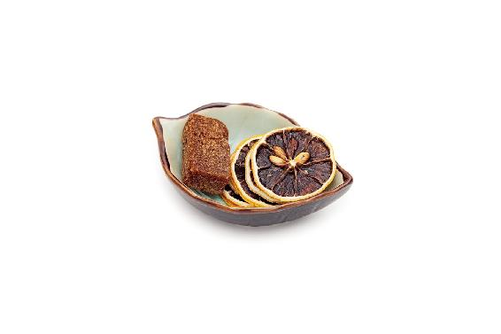
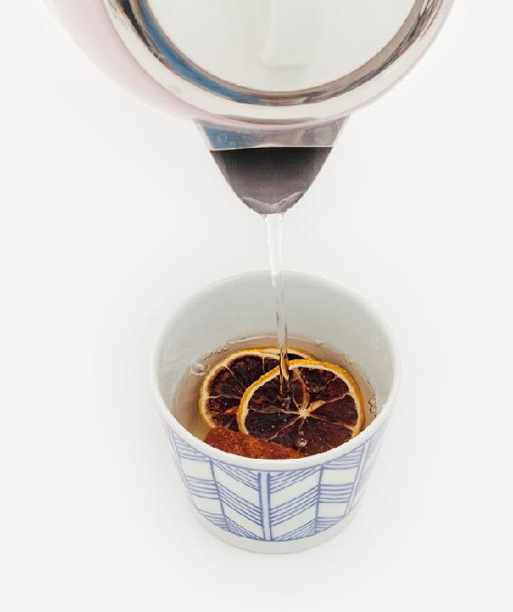
- 柠檬红糖水，我喝了一个月，脸上的斑淡化了好多。我老公说的。
——怒放的生命
- 我现在喝姜枣茶，每晚茯苓粉加柠檬水，感觉皮肤白皙啦。
——22群读者
- 有血瘀的朋友可以试试柠檬红糖胡椒粉茶，我个人已经试过几天。伏案工作头胀，脾胃消化慢，喝了能帮助活血化瘀，感觉好很多，气色也好了。
——41群小明
黄褐斑单从皮肤表面来治是不行的，它是身体内部的问题，病在肝肾，应该调肝肾。
黄褐斑的病根在于气滞血瘀。多数人长黄褐斑，往往都是从气滞型开始发展的。最初斑的颜色比较浅，一般长在眼角、颧骨等两边对称的部位。调理气滞型的黄褐斑需要理气，气血一运行，就把毒素慢慢地排掉了。
理气祛斑茶
【原料】
干橘叶1小把、干柠檬片或新鲜柠檬片6片、红糖适量。
【做法】
把橘叶、柠檬片、红糖一起放入随身杯，沸水冲泡，闷10分钟后当茶喝。可以反复冲泡。
【功效】
- 调理气滞型黄褐斑（胸闷、爱叹气、颧骨长斑）。
- 疏解肝气。常感觉胸闷，要叹出气来才舒服的女性，在经期前一周喝，对预防乳腺增生有帮助。
- 调理肺热咳嗽（痰黄）。
怎样收集橘叶？
橘叶是一味中药，中药房有出售。其实你也可以自己收集，不用花钱：市场上卖的新鲜红橘往往带有叶子，买时不要扔掉了，把它们清洗干净，然后晾到干透，用密封袋装好，就可以长期保存了。
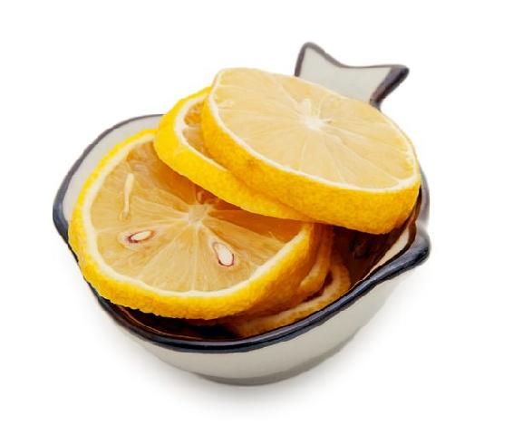
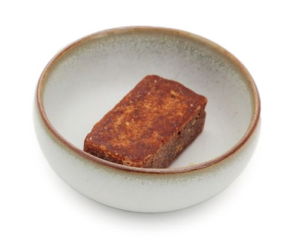
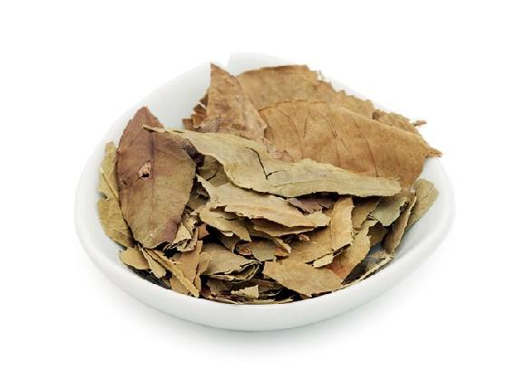
- 这道茶散气的作用非常强，没有黄褐斑的人不要随便喝。
- 如果喝了以后感觉气虚，可以同时喝黄芪党参水来补气。
读者评论
- 快要来例假前十天左右乳房胀痛，昨天又刺痛了一天。下班后赶紧跑药店找橘叶，跑了好几家店终于找到了，回到家用玫瑰和橘叶泡茶喝。今早起来刺痛感觉没有了，胀痛有所缓解。
——落叶知秋
- 乳房胀痛，用经络梳按摩，上午喝橘叶红糖水，下午就好多了！
——黑白先生
- 感触非常深。之前有点抑郁，每天烦躁易怒，生活悲观。陈老师的一道橘叶柠檬红糖水，彻底让我从压抑的生活中解脱出来。本来是想祛斑的，没想到橘叶理气的效果这么好，喝了一个星期，就变得开朗很多。
——忍者
女性长期黄褐斑，伴有妇科问题（乳腺增生、子宫肌瘤、卵巢囊肿）：青陈甘草茶
乳腺增生、子宫肌瘤、卵巢囊肿……这些看似不同的病，其实根源都在于肝气郁滞、气滞血瘀。有这些病的女性，特别容易长斑，而且久久不去。
青陈甘草茶
【原料】
青皮200克、陈皮200克、山楂200克、甘草60克。
【做法】
- 将原料分成20份，分别装入20个茶包袋。
- 每次取1包，沸水冲泡，闷30分钟后饮用。
【功效】
- 疏解肝气郁滞，适合有乳腺增生、子宫肌瘤、卵巢囊肿等问题的女性饮用。
- 淡化黄褐斑。
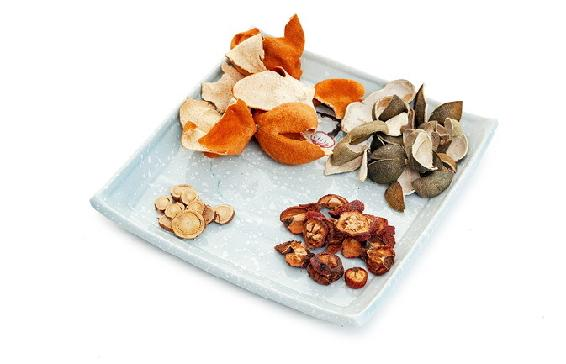
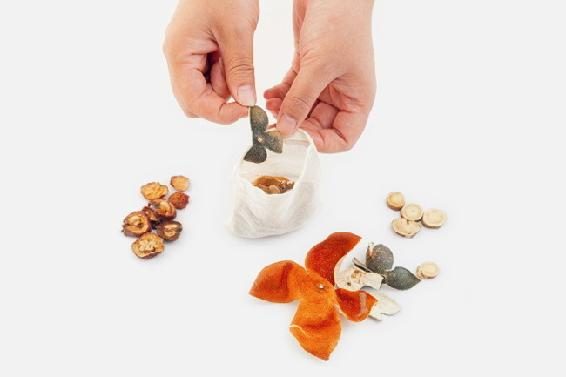
- 青皮分两种：个青皮（完整的红橘幼果）和四花青皮。如果选个青皮，注意避开病果和杂果（其他品种柑橘和橙子等的幼果冒充的）；如果选四花青皮，注意避开杂皮（其他品种柑橘和橙子的皮冒充的）。
- 月经前乳房胀痛的人加1小把橘叶效果更佳。
- 气虚的人喝这个茶，要同时服用黄芪党参水来补气。
- 一段时间喝了青陈甘草茶，发现经期综合征消失了，贼开心！
——25群读者
- 这个也很好，对乳腺增生很有帮助。
——春晓
- 我有哮喘，一到冬季就咳嗽，尤其是雾霾天，咳嗽起来很难受，靠吃药压着。后来别人送我一些青皮、陈皮，我就加上玫瑰花茶一起喝，感觉不咳嗽了。自己又买了些川陈皮，坚持一年了，一直没吃药。听陈老师介绍，青皮、陈皮和玫瑰花都是理气的，正好对我症。
——怡
- 以前来例假乳房胀痛得都不能碰，现在饮用青陈甘草茶一个星期，这次来例假都没有那些症状了。
——51群读者
- 之前便便一直不成形，本来想着喝这茶调理乳腺增生，可能因为理气的缘故，大便成形了。
——27群读者
“百病不离当归治”——当归是生血、活血的主药，因此大夫开方子普遍用到当归，有“十方九归”之说。
上好的当归，有浓郁的异香，这是由于它含丰富的精油成分。这种香气对女性有调肝的作用。
女性肝血虚或血瘀，脸上气色会不好，显得暗黄，可以喝当归红枣茶。
当归红枣茶
【原料】
红枣60个、当归片100克。
【做法】
- 当归切成薄片，和红枣一起分成10份，分别装入10个茶包袋。
- 每次取1袋，将红枣掰开，沸水冲泡，闷10分钟后饮用，可以反复冲泡。
【功效】
- 预防眼睛疲劳。
- 健脾养肝、益气补血。
- 使面色红润。
用这个方子加上红糖一起饮用，就是一款女性经期的保养茶。
- 当归红枣茶，一般月事完了之后喝五至七天，喝了之后有精神，气色很好。
——晶晶
- 当归让我一直很低的血色素值提升迅速，昨天做体检基本正常了，困扰我多年的头昏毛病没有了，面色好多了，贫血终于离我而去。
——Henrietta熊
女性孕期保养小茶方
女性备孕小茶方:香椿茶
本书对症调养篇中介绍的糖尿病人保健用的香椿茶，女性也可以常饮。
香椿既能暖脾阳又能通肾阳，可以促进内分泌，有帮助怀孕的作用。
香椿茶
【做法】
- 采摘香椿叶晒干，揉碎，装入茶包袋。
- 每次取一袋，沸水冲泡，闷5分钟后饮用。可以反复冲泡。
【功效】
适合备孕的女性调理身体。
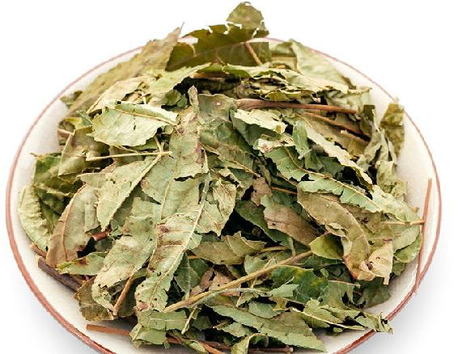
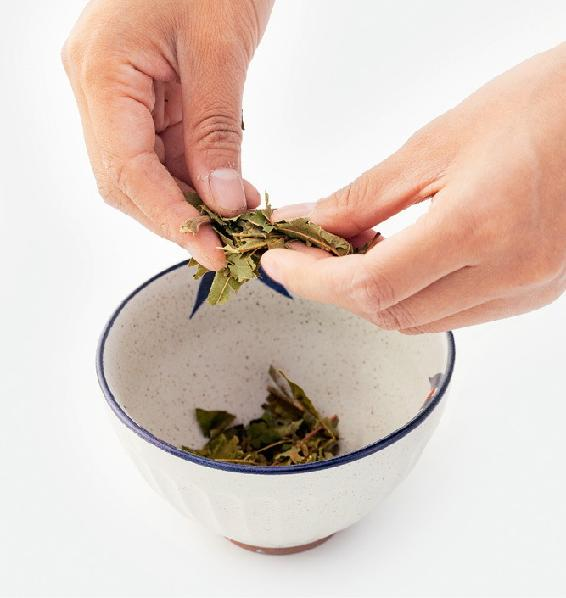
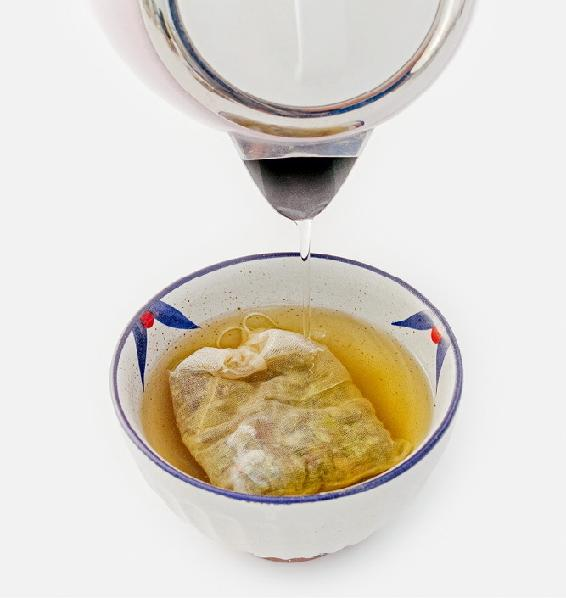
香椿茶有多种功效，调理肠炎用新鲜的更佳，降糖用老香椿叶更佳。女性备孕，新老叶都可以。
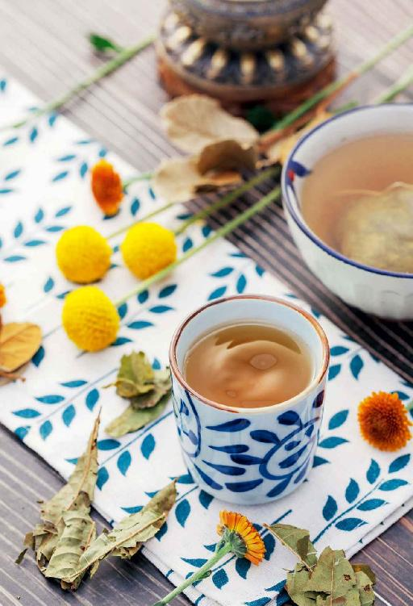
止孕吐的小茶方：苹果皮炒米茶
苹果皮有开胃的作用，而且它的含铁量是果肉的26倍。泡过的果皮也可以吃下去。
苹果皮炒米茶
【原料】
大米1 000克、新鲜苹果适量。
【做法】
- 大米放入无油的炒锅，用小火翻炒到焦黄。
- 每天取炒大米大约30克，加一个新鲜苹果的果皮，用沸水冲泡，闷10分钟后饮用。
- 苹果要用加过面粉的清水泡洗10分钟，再削皮。
【功效】
- 防止妊娠呕吐，怀孕女性常喝可以缓解孕期反应。
- 消食、健脾胃。
- 怀孕的时候孕吐反应特别严重，医生说是体质问题，只能忍忍了，不建议吃药。幸好有老师的食方，苹果和大米几乎是家庭常备的两样东西，轻松地解决了我吐得天昏地暗的问题。喝了一大杯当天下午就不吐了，晚上胃口也好了些。之前吐得都吃不下饭，喝了这个茶方，吃吗吗香。
——悦悦
- 孕期很好用的茶方。孕妇吃得多，但是消化比平时弱，苹果皮煮焦米水帮助消化真的很强。每天喝一点，肠胃空了，人就舒服了。
——13群读者
孕期养气血小茶方：补肾益生饮
我把桑葚干比作水果中的“乌鸡白凤丸”，它滋阴养血，补肾抗衰老，是适合全家人的健康零食。孕妇和小孩都可以常吃。
葡萄干健脾开胃，也适合孕妇吃，能缓解孕期反应。
补肾益生饮
【原料】
葡萄干150克、黑桑葚干150克、大枣30个。
【做法】
- 把葡萄干、黑桑葚干、大枣用加面粉的清水泡10分钟，清洗干净。（注：如果是免洗开袋即食的干果，可以省略上述步骤。）
- 放入微波炉，用高温烘烤3分钟。
- 把全部原料分成10份，分别装入10个茶包袋。
- 每次取1袋，沸水冲泡，闷10分钟后饮用。可以反复冲泡。
【功效】
- 孕期养气血。
- 补肾、养血、抗衰老。
- 补肾益生饮有助于安胎，这个不是我用的，是表姐怀孕的时候我让她吃的。孩子生下来，眼睛又黑又亮又有神，头发又黑又多又亮，皮肤也好。都说这小孩眼睛漂亮，头发长得好，人见人爱。表姐特别高兴，说是我的功劳，所以忍不住想要分享一下。
——简单
- 现在是孕中期，医生说我贫血，于是我每天用这个食方煮粥喝，放了老师推荐的适合孕妇吃的藜麦，还有花生。每天早餐都吃这个，吃了快1个月了，感觉特别好。谢谢老师。
——Yeny
- 陈老师是我们的大救星，我本来头发掉得厉害，都剩一小把扎不起辫子了。这两年按老师说的方法喝桑葚茶、吃桑葚膏及喝养肾汤，现在头发可以扎个大辫子了，还乌黑乌黑的（今年我53岁）。感恩！
——smith
- 喝了两天桑葚红枣茶，明显感觉宝宝活跃些，胎动时有力量，果然是养胎茶。
——Rachel
- 每天吃桑葚干、红枣、葡萄干，感觉我身体的状态好多啦！感恩遇见老师，让我对生活充满希望。从昨天开始喝养血四宝汤，喝过心里就感觉自己气血足了。
——羽翼
柠檬有一个好听的别名叫“宜母子”，因为它很适合孕妇吃。孕妇爱吃酸的，吃柠檬正合适，可以开胃口、助消化、防止恶心，还有安胎的作用。
蜂蜜柠檬茶
【原料】
新鲜柠檬、蜂蜜适量。
【做法】
- 新鲜柠檬洗干净，切片，放入玻璃瓶中，一层柠檬浇一层蜂蜜，最后一层蜂蜜要全面覆盖住最上层的柠檬片。盖上盖子，放入冰箱冷藏，可以放一年。
- 用时取几片柠檬带汁放入随身杯，用40℃以下的温水冲泡。
【功效】
- 美白瘦身，淡化皮肤经阳光暴晒后出现的晒斑。
- 可以缓解孕妇食欲不振、恶心、胎动不安的现象。
- 生津止渴，开胃。
- 润肺止咳。
多晒太阳会发作日光性皮炎的人，喝新鲜柠檬泡的茶之后，最好避免暴晒。
读者评论
- 我给孩子喝柠檬泡蜂蜜水快两年了，感冒咳嗽明显减少，生病的话吃一点儿药就康复了。
——12群读者
- 孩子昨天突然猛咳，没有别的症状，我以为是干咳，给他喝了鱼腥草梨皮水没效果，今天带去医院看才知道是受寒了，喉咙痒引起的。冲了一杯柠檬汁蜂蜜水让孩子分几次喝完，一小时后有好转，没咳那么厉害了。槐花蜜消炎效果杠杠滴。
——期待